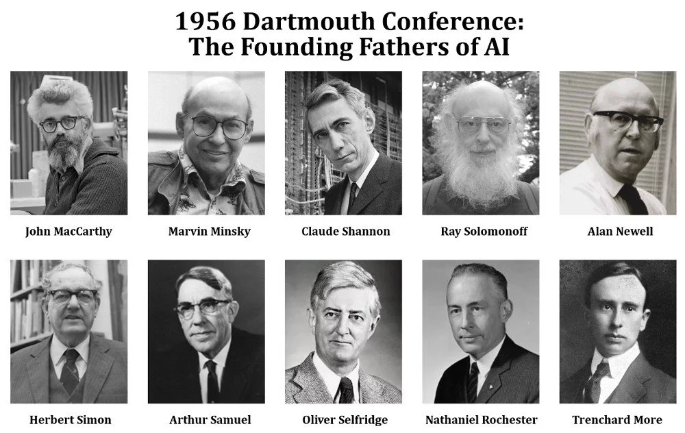

Historique
La conférence de Dartmouth, tenue à l'été 1956 au Dartmouth College, est considérée comme l'acte fondateur de l'intelligence artificielle. C'est à cette occasion que le terme "intelligence artificielle" a été proposé pour la première fois par John McCarthy.
Acteurs Principaux
- John McCarthy (organisateur principal)
- Marvin Minsky
- Claude Shannon
- Allen Newell & Herbert Simon
Fonctionnement de la Conférence

La conférence s’est tenue pendant deux mois avec des ateliers, des présentations et des discussions autour de la simulation de l’intelligence humaine par des machines.
En savoir plus sur WikipédiaTableau
| Nom | Rôle | Contribution |
|---|---|---|
| John McCarthy | Organisateur | Créateur du terme "IA" |
| Marvin Minsky | Participant | Travaux sur les réseaux neuronaux |
| Claude Shannon | Théoricien | Fondateur de la théorie de l'information |